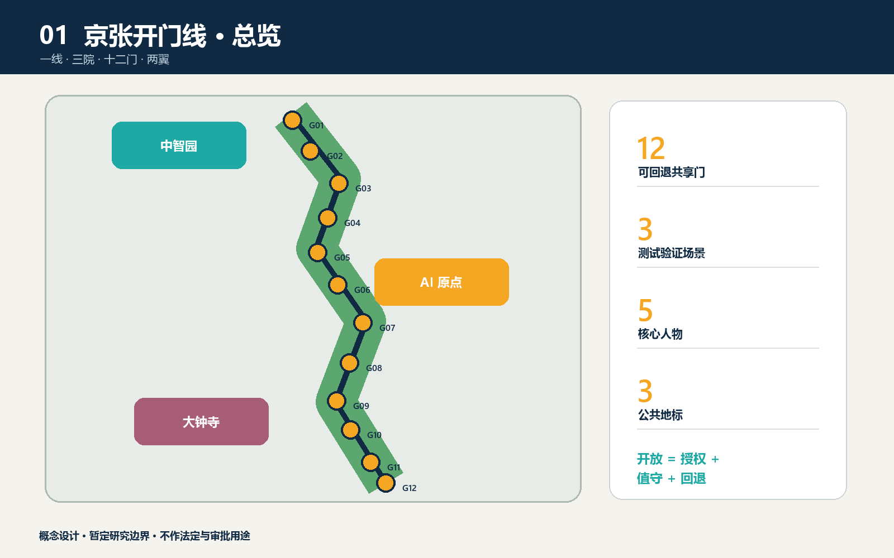
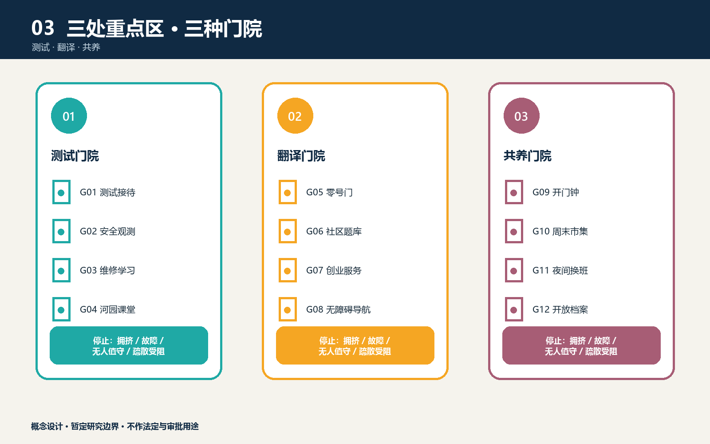
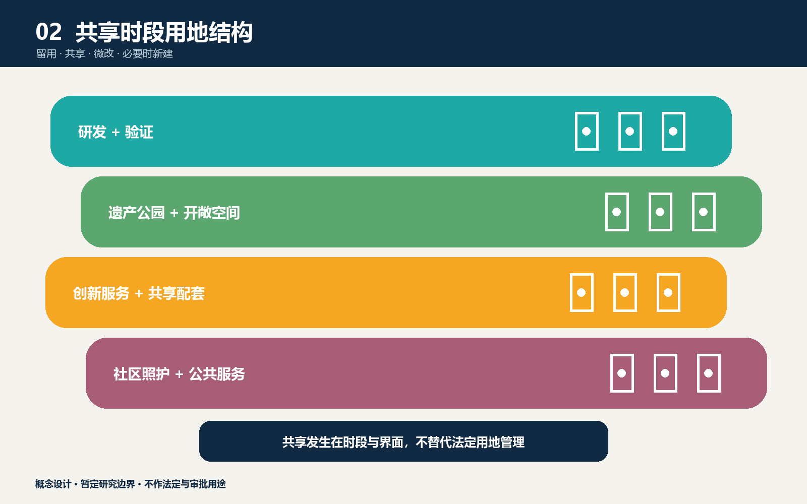
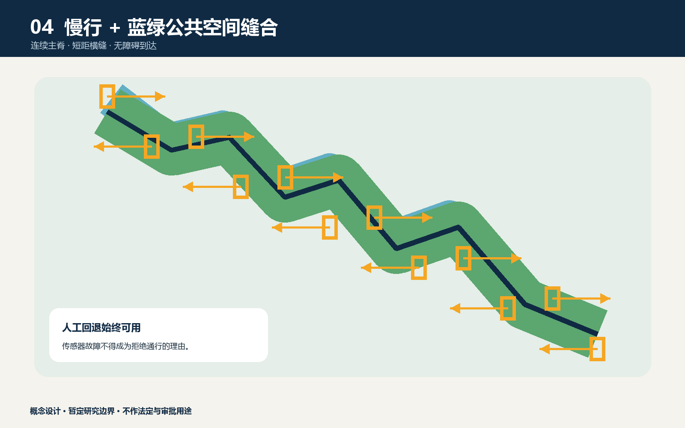
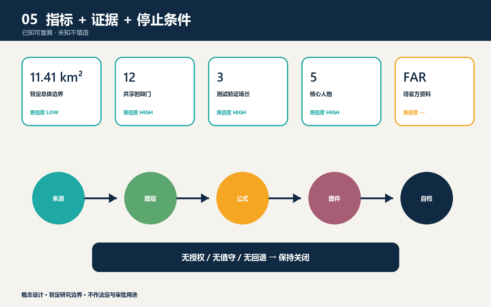

统筹研究范围建立伙伴—资源—时段目录；总体设计范围组织遗产公园慢行脊与公共空间；重点区域用三个可关闭原型验证容量、可达与活动人流。所有范围均以暂定研究边界工作，不替代官方红线。
01 · 总览地图
一条公共门槛脊线

02 · 三层范围
研究伙伴，总体缝合，重点验证
03 · 重点区域
测试门院、翻译门院、共养门院

04 · 用地分区
共享发生在时段与界面

05 · 交通慢行与轨道
蓝绿公共空间的十二处横向缝合

06 · 建筑
留用、共享、微改、必要时新建
优先使用首层、院落与连廊；门架可拆、可修、可替换。拆除只在结构与安全专项确认后讨论，建筑规模和容积率不填造。
07 · 更新项目
先协议和三门原型，再决定扩展
一期核验边界与权属并运行三项测试；二期在评估通过后扩展十二门；三期按年度报告保留、迁移或退出。
08 · AI 场景
辅助排班、导航、复盘，不替人作最终准入决定
系统默认数据最小化，保留人工计数、纸质名单、机械钥匙和现场导引；不以生物识别作为默认通行方式。
09 · 核心指标
已知可复算，未知不填造

10 · 任务覆盖
六项智能体任务与专业深度同链审计
任务、标准、图层、指标和自检分别记录于合规矩阵、标准矩阵、设计深度矩阵、GeoJSON、metrics.json 与 self_check.json。
11 · 自检状态
四道门：确定性、空间、视觉、专业证据
无授权、无值守或无回退条件，门保持关闭。官方边界到位后，图层、面积、图件和版面全部重算。
12 · 来源
官方资料作依据，全球案例只取机制
来源用途和公开状态见 sources.json；案例不外推规模、绩效、土地制度或政府承诺。
13 · 假设
暂定边界与审批依赖公开可见
权属、文保、消防、无障碍、保险、运营、隐私与市政条件逐点核验；未满足时节点保持观察或关闭。